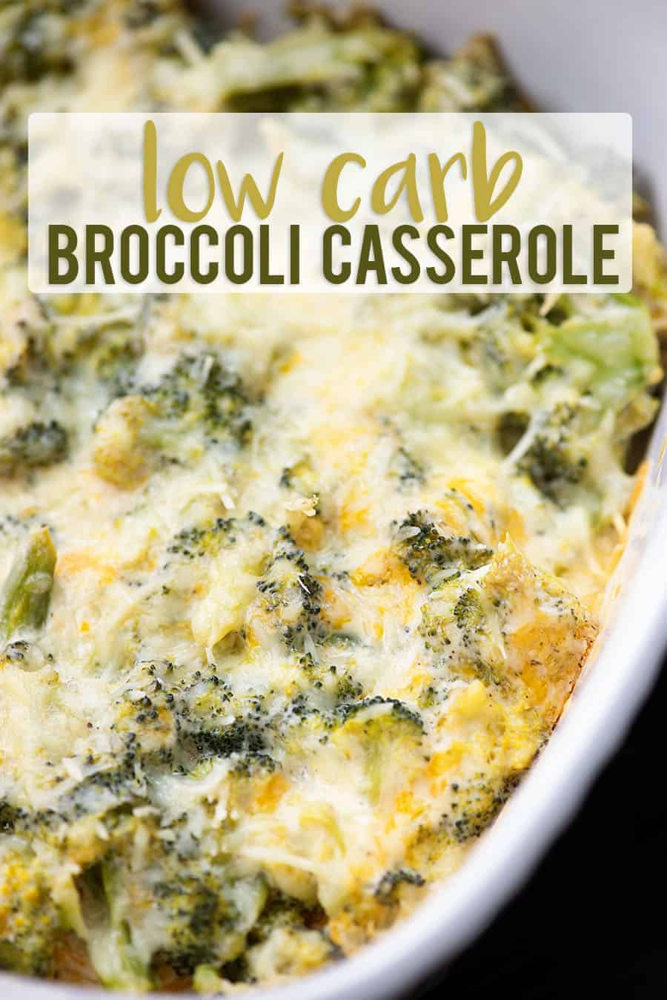

Broccoli Cheese Casserole

Description
An amazingingly esculent dish of broccoli, cheese and sundry other ingredients.
Ingredients
- 20 ounces fresh broccoli florets
- 8 ounces cream cheese, room temperature
- ¼ cup mayonnaise
- 1 cup freshly grated cheddar cheese
- 1 teaspoon garlic powder
- ½ teaspoon ground black pepper
- ¼ teaspoon salt
- ¼ cup grated Parmesan
Steps
- Preheat oven to 350 degrees.
- Add the broccoli to a large microwave safe bowl along with 2 tablespoons of water. Cover tightly with plastic wrap and microwave for 2 minutes. Let sit, covered, for 2 minutes.
- Add the cream cheese, mayonnaise, cheddar, garlic powder, salt, and pepper to a small bowl and mix well to combine.
- Stir the cream cheese mixture into the steamed broccoli until well combined.
- Transfer broccoli to an 8x8 baking dish and sprinkle the Parmesan over the top.
- Bake for 10 minutes.